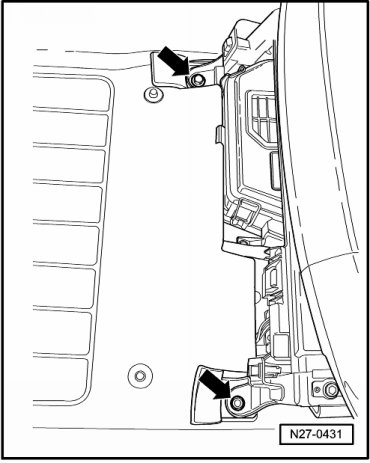
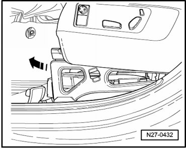
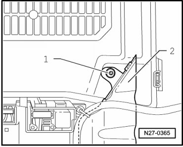

Component Tests and General Diagnostics
Main Battery Switch, Resetting after Deployment
- Switch off ignition, switch off all electrical consumers and remove ignition key.
- Remove left front seat rail cover.
- Remove left front seat trim
- Remove screws - arrows -.

- Tilt seat frame and seat to rear - arrow -.

- Remove screw - 1 - and remove air guide - 2 -.

- Release retaining tab - arrow - and remove cover.

- Check starter wire for short circuit according to wiring diagram. If necessary, repair short circuit.
- Press reset button - 3 - to reset main battery switch. A copper coil must be visible in viewing window - 4 -, indicating the battery cut-off switch is reset.

- Close E-box with cover and reinstall air duct.
- Replace seat frame bolts - arrows - and tighten them to the specification --> [ Battery ] Battery.
- Install left front seat rail cover.
- Install left front seat trim
- Perform work steps according to table: --> [ After Connecting Battery, through 11.06 ] Battery, with Auxiliary Battery or Two-Battery Layout, Disconnecting and Connecting.